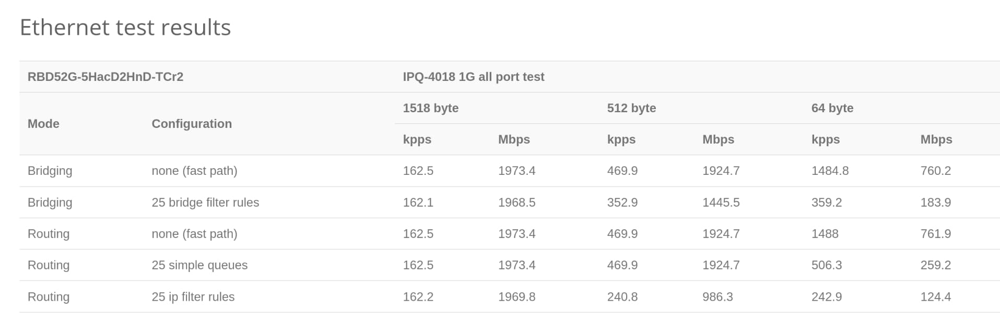

Setting up the Mikrotik hAP ac² with Singel Fibre

The Mikrotik family of routers are known for their extensive configurability, offering enterprise level features such as PoE, custom routes, VLANs and more. It runs a custom Linux distribution known as RouterOS which offers a WebGUI and terminal interface, as well as SSH.
I wanted to replace my old Singtel WiFi Gigabit Router AC Elite, after it started intermittently dying.
Hardware Setup
I got the Mikrotik hAP ac2 secondhand for $50. It runs the 4-core IPQ-4018 chip, and comes with 128MB of RAM. It also has dual-band WiFi, with the 5GHz band supporting a maximum transfer rate of 867 Mbit/s. The all-port benchmark for this router has it routing 1518-byte packets at 1973.4 Mbps, which is more than sufficient for my current Singtel 1Gbps plan.

For the Optical Network Terminal (ONT), I have an Alcatel-Lucent G-240G-C.
Singtel VLAN Tagging
Router setup is not so straightforward with Singtel Fibre, however, due to a 'feature' present called VLAN Tagging1.
In short, packets exiting the ONT have a VLAN tag on them. In order to access the internet, the router connected to the ONT needs to remove or strip the VLAN tag. For that reason, a non-VLAN aware router connected to the ONT will not have internet access.
Setup
1. Connect hardware
Begin by connecting port 1 of the Mikrotik router (interface ether1) to the LAN 22 of the ONT. Then, connect the rest of your PCs/switches to the other LAN ports on the Mikrotik router (interface ether2 to ether5).
Power on the ONT and Mikrotik router. Now, either connect your PC to the LAN, or the SSID emitted by the Mikrotik router (the name should be obvious).
2. Access Console
From here, you have 2 ways of accessing the terminal interface.
- Option 1: Browse to `192.168.88.1`, click 'Ok' and then click on the 'Terminal' button.
- Option 2: `ssh` to `admin@192.168.88.1`.
You can read more about the terminal commands [here][console].
Once you can access the terminal, run the following command:
[admin@MikroTik] > interface/bridge/port print
We see that a bridge has been created between all the interfaces except ether1.
Flags: I - INACTIVE; H - HW-OFFLOAD
# INTERFACE BRIDGE HW PVID PRIORITY PATH-COST INTERNAL-PATH-COST HORIZON
;;; defconf
0 H ether2 bridge yes 1 0x80 10 10 none
;;; defconf
1 H ether3 bridge yes 1 0x80 10 10 none
;;; defconf
2 H ether4 bridge yes 1 0x80 10 10 none
;;; defconf
3 IH ether5 bridge yes 1 0x80 10 10 none
;;; defconf
4 I wlan1 bridge 1 0x80 10 10 none
;;; defconf
5 I wlan2 bridge 1 0x80 10 10 none
3. Setup VLAN
At this point, we do not have internet access yet. We will need to 'untag' the packets coming from the ONT.
In order to tell the router to untag incoming packets from ether1 (and automatically re-tag packets outgoing from ether1), we will need to create a VLAN on that interface. The VLAN ID for Singtel internet is 10.
Run the following command:
> interface vlan add interface=ether1 vlan-id=10
4. Setup DHCP Client on router
Then, we need to tell our router to obtain its IP address from this VLAN, instead of directly from ether1:
> ip dhcp-client set 0 interface=vlan1
We should now have an IP address assigned to us by the ONT:
> ip dhcp-client print
# INTERFACE USE-PEER-DNS ADD-DEFAULT-ROUTE STATUS ADDRESS
0 vlan1 no yes bound <YOUR-IP-ADDRESS>/24
At this point, the router itself has internet access (over vlan1).
5. Setup NAT
Next, we need to tell the router to change the source IPs of outgoing packets to the router's own IP, so that the ONT and subsequent servers will be able to route the packet back to us (these servers can't see our internal addresses on the network, e.g. 192.168.x.x - they can only see our router's external address as above). This translation is known as Network Address Translation, of which there are 2 types - source (srcnat) and destination (dstnat), which apply to outgoing and incoming packets respectively.
> ip firewall nat print
0 chain=srcnat action=masquerade out-interface-list=WAN log=no log-prefix="" ipsec-policy=out,none
The masquerade action is a special type of srcnat which sets the source IP to whatever the router's own IP happens to be at that point in time. This is useful when our router gets assigned IP addresses dynamically (most ISPs do this).
We now tell the router to perform NAT on packets headed for the internet, by modifying the existing entry:
> ip firewall nat set 0 out-interface=vlan1
> ip firewall nat unset 0 out-interface-list
To complete the NAT hairpin setup and maintain SSH access internally on the LAN, run the following:
# This enables hairpinning
> ip firewall nat add chain=srcnat action=masquerade src-address=192.168.88.0/24 dst-address=192.168.88.0/24
# This allows clients on the LAN to still be able to SSH to the router
> ip firewall nat add chain=dstnat to-addresses=192.168.88.1 to-ports=22 protocol=tcp dst-address=192.168.88.1 dst-port=22
At this juncture, your device should have internet access.
Advanced Configuration
Changing default gateway address
> ip address add address=192.168.1.1/24 interface=bridge
> ip dhcp-server remove 0
> ip dhcp-server setup
Setup Static DHCP Leases
This can be done conveniently via the WebGUI, or the terminal.
Setup Port Forwarding
This can be done with dstnat rules, as follows:
> ip firewall nat add chain=dstnat action=dst-nat to-addresses=<LOCAL-ADDRESS> to-ports=<LOCAL-PORT> protocol=tcp dst-address-type=local dst-port=<PUBLIC-PORT>
This rule will forward packets incoming on PUBLIC-PORT and send them to LOCAL-ADDRESS:LOCAL-PORT.
Additionally, the inclusion of dst-address-type=local allows devices within the LAN to access the public URL of a port-forwarded device on the same LAN (also known as hairpin NAT).
Either dst-address-type or dst-address must be set, otherwise all traffic bound for PUBLIC-PORT, even locally, will be routed to LOCAL-ADDRESS.
Setup DNS-over-HTTP (DoH)
DoH is a more secure form of DNS, which cryptographically verifies responses from the server. You can set it up on the router by following this guide for Cloudflare's 1.1.1.1 service.
After you have set it up, you can test whether it is working here.
Note: if you receive certificate is not yet valid errors after configuring DoH, you may need to setup the NTP client on the router to fetch the correct time as follows:
> system ntp client set enabled=yes
> system ntp client servers add address=pool.ntp.org
-
Singtel used to have a 'Unlimited Fibre Plan'. That plan did not use VLAN tagging, and you could connect any router to the ONT. However, subsequent plans, such as the '1Gbps Fibre Home Bundle with Telephone Line', have reverted back to using VLAN tagging. ↩
-
LAN 1 may also work. ↩